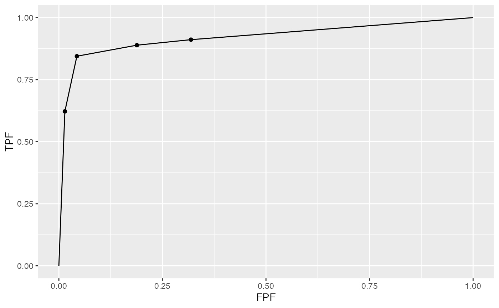

dataset02.RdThis is referred to in the book as the "VD" dataset. It consists of 114 cases, 45 of which are diseased, interpreted in two treatments ("0" = single spin echo MRI, "1" = cine-MRI) by five radiologists using the ROC paradigm. Each diseased cases had an aortic dissection; the ROC paradigm generates one rating per case. Often referred to in the ROC literature as the Van Dyke dataset, which, along with the Franken dataset, has been widely used to illustrate advances in ROC methodology. The example below displays the ROC plot for the first treatment and first reader.
dataset02A list with 3 elements: $ratings, $lesions and $descriptions; $ratings
contain 3 elements, $NL, $LL and $LL_IL as sub-lists; $lesions
contain 3 elements, $perCase, $IDs and $weights as sub-lists; $descriptions
contain 7 elements, $fileName, $type, $name,
$truthTableStr, $design, $modalityID and $readerID as sub-lists;
rating$NL, num [1:2, 1:5, 1:114, 1], ratings of non-lesion localizations, NLs
rating$LL, num [1:2, 1:5, 1:45, 1], ratings of lesion localizations, LLs
rating$LL_ILNA, this placeholder is used only for LROC data
lesions$perCase, int [1:45], number of lesions per diseased case
lesions$IDs, num [1:45, 1], numeric labels of lesions on diseased cases
lesions$weights, num [1:45, 1], weights (or clinical importances) of lesions
descriptions$fileName, chr, "dataset02", base name of dataset in `data` folder
descriptions$type, chr "ROC", the data type
descriptions$name, chr "VAN-DYKE", the name of the dataset
descriptions$truthTableStr, num [1:2, 1:5, 1:114, 1:2] 1 1 1 1 ..., truth table structure
descriptions$design, chr "FCTRL", study design, factorial dataset
descriptions$modalityID, chr [1:2] "0" "1", treatment labels
descriptions$readerID, chr [1:5] "0" "1" "2" ..., reader labels
Van Dyke CW, et al. Cine MRI in the diagnosis of thoracic aortic dissection. 79th RSNA Meetings. 1993.
str(dataset02)
#> List of 3
#> $ ratings :List of 3
#> ..$ NL : num [1:2, 1:5, 1:114, 1] 1 3 2 3 2 2 1 2 3 2 ...
#> ..$ LL : num [1:2, 1:5, 1:45, 1] 5 5 5 5 5 5 5 5 5 5 ...
#> ..$ LL_IL: logi NA
#> $ lesions :List of 3
#> ..$ perCase: int [1:45] 1 1 1 1 1 1 1 1 1 1 ...
#> ..$ IDs : num [1:45, 1] 1 1 1 1 1 1 1 1 1 1 ...
#> ..$ weights: num [1:45, 1] 1 1 1 1 1 1 1 1 1 1 ...
#> $ descriptions:List of 7
#> ..$ fileName : chr "dataset02"
#> ..$ type : chr "ROC"
#> ..$ name : chr "VAN-DYKE"
#> ..$ truthTableStr: num [1:2, 1:5, 1:114, 1:2] 1 1 1 1 1 1 1 1 1 1 ...
#> ..$ design : chr "FCTRL"
#> ..$ modalityID : Named chr [1:2] "0" "1"
#> .. ..- attr(*, "names")= chr [1:2] "0" "1"
#> ..$ readerID : Named chr [1:5] "0" "1" "2" "3" ...
#> .. ..- attr(*, "names")= chr [1:5] "0" "1" "2" "3" ...
PlotEmpiricalOperatingCharacteristics(dataset = dataset02, opChType = "ROC")$Plot
